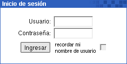

|
Para ingresar a su webmail, abra un
navegador web
, tal como
Internet Explorer
o
Mozilla
e ingrese el URL (
Uniform Resource Locator
) en la barra de direcciones. Por ejemplo, si la dirección de su sitio web es www.sudominio.com, la dirección de su webmail será www.sudominio.com/openwebmail. Sin embargo esto no es necesariamente cierto en todas las situaciones. Si usted no puede encontrar el inicio de sesión de su webmail, por favor contacte al administrador de su sistema para más ayuda.
(Ejemplo: http://www.sudominio.com/openwebmail)
Una vez que haya accedido a la página de inicio de sesión, se encontrará con algo similar a lo siguiente:
|
 | Ingrese su Nombre de Usuario en el campo de texto a la derecha de Usuario:, y su contraseña en el campo de texto a la derecha de Contraseña:.
Nota: Su nombre de usuario no es necesariamente el mismo que el de su dirección de correo electrónico. Si no conoce su nombre de usuario, por favor contacte al administrador de su sistema. |
Si usted lo desea, puede hacer un clic en la casilla "recordar ni nombre de usuario" y su nombre de usuario será insertado automáticamente la próxima vez que se dirija al "Inicio de sesión", de manera que solamente deberá ingresar su contraseña.
Una vez que haya ingresado los datos requeridos, puede presionar botón "Ingresar" o la tecla "Enter" de su teclado. Si el nombre de usuario y la contraseña ingresados son correctos, será redirigido a su Bandeja de Entrada.
Si es la primera vez que ingresa a Open Webmail, será llevado a sus opciones de configuración. Por favor consulte la sección de
Configuración Básica de Preferencias
. Si ustes ya ha configurado sus preferencias, diríjase directamente a
Usando su Bandeja de Entrada
|